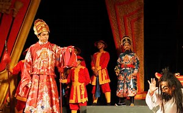
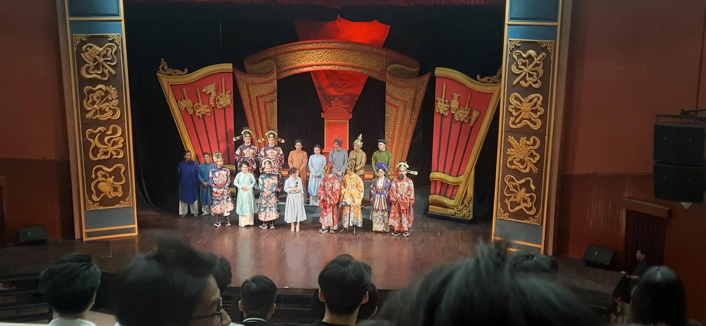

Các sự kiện trong vở kịch “Đức Thượng công Tả quân Lê Văn Duyệt - Người mang chín án tử” Mở màn từ việc đưa ta vào bối cảnh nhà vua và Huệ Phi đang nói về thế lực của Tổng trấn thành Gia Định Lê Văn Duyệt và Huệ Phi có mưu đồ về việc cho Lê Văn Duyệt đi ra mặt trận chiến trường chiến đấu thủ thành gia định và cho cha của mình “Phó trấn Huỳnh Công Lý” Người mang danh là cha vợ vua nắm giữ việc trong nước với âm mưu hy vọng Lê Văn Duyệt hy sinh ngoài chiến trường để cho cha mình “Phó trấn Huỳnh Công Lý” lên làm Tổng trấn rồi hưởng hết mọi thứ. Trong khi Tổng trấn thành Gia Định ra trận, Huỳnh Công Lý rồi bộc lộ bản chất là một tham quan, người gần như không quan tâm đến thần dân mà chỉ nghĩ đến của cải, “ăn cắp” , hành hạ dân, đánh đập dân và làm con dân Gia Định chết mày chết mòn trong sự đói khổ. Mọi chuyện sau đấy không diễn ra theo ý muốn của Huệ Phi, Tổng trấn Lê Văn Duyệt lại lập công quay về từ chiến trận mà nhận thấy thành Gia Định vẫn hoang tàn như ngày nào, dân đen vẫn đầy rẫy bên ngoài, rồi chợt nhận ra việc lệnh mở kho gạo ban phát cho dân của mình vẫn chưa được thực thi với nhiều nghi vấn và cáo buộc về sự tham ô của Huỳnh Công Lý, Lê Văn Duyệt lập tức cho và điều tra về sự việc đến rồi dẫn đến kết cuộc mọi việc làm của Phó trấn bị bại lộ.
Tổng trấn Lê Văn Duyệt sau đấy bắt Huỳnh Công Lý và đưa vào ngục, thông tin này rồi cũng đến tay vua và Huệ Phi tuy dưới bao lời cầu xin của Huệ Phi nhưng nhà vua Minh Mạng vẫn đắn đo không làm gì được vì dù sau cha của Huệ Phi cũng là một tham quan nên không thể giúp được, rồi nhanh chóng sau đó Lê Văn Duyệt cũng chính tự mình giải quyết và xử tử Huỳnh Công Lý trong sự chứng kiến của dân Gia Định nhầm không chỉ cái ác mà còn làm cho Gia Định trở nên tốt đẹp hơn.
Đối với em nhân vật Đức Thượng công Tả quân Lê Văn Duyệt hay còn gọi là Lê Văn Duyệt là một người mang hình tượng chính trực, một người vì công lý và đứng cho công lý, người mà sẵn sàng hy sinh cho bản thân vì cả một con dân thành Gia Định, là một người nhân từ và quan tâm đến mọi người. Ngoài ra ngài cũng là một người lãnh đạo tài ba có thể dẫn dắt quân ta đánh tan quân Xiêm La, là một người tài cao đức rộng và đi cùng với đó là những đức tính tốt đẹp và đáng trân trọng.
Qua vở kịch “Đức Thượng công Tả Lê Văn Duyệt - Người mang chín án tử”
Em nghĩ rằng tác giả như muốn mang thông điệp đến cho chúng ta về sự trung thực, chính mỗi người trong chúng ta phải công minh, trung thực và chính trực, theo lẽ phải và lên án cái ác. Thông điệp ấy cho đến giờ vẫn còn có ý nghĩa trong xã hội hiện đại này vì khi xã hội càng hiện đại với công nghệ phát triển thì việc tiếp cận và kết nối với mọi người trên toàn cầu càng dễ dàng, điều này càng chứng tỏ việc chúng ta có thể lay động cả một cộng đồng chỉ thông qua vài hành vi của chính mình mà không hay biết ngoài ra việc lên án những hành vi gian dối, lừa gạt người khác trong xã hội cũng phần nào làm giảm bớt đi nhiều vấn nạn hiện hành ngày nay. Ngoài ra những người trung thực và chính trực cũng là những người thường mang theo những đức tính tốt đẹp đi kèm như nhân hậu, siêng năng và thậm chí còn được xã hội tôn trọng và ngưỡng mộ. Cho đến sau cùng, khi chính mỗi người trong chúng ta có những đức tính đấy thì xã hội ngày nay sẽ càng ngày càng phát triển và tươi đẹp hơn từ hiện tại đến tương lai.